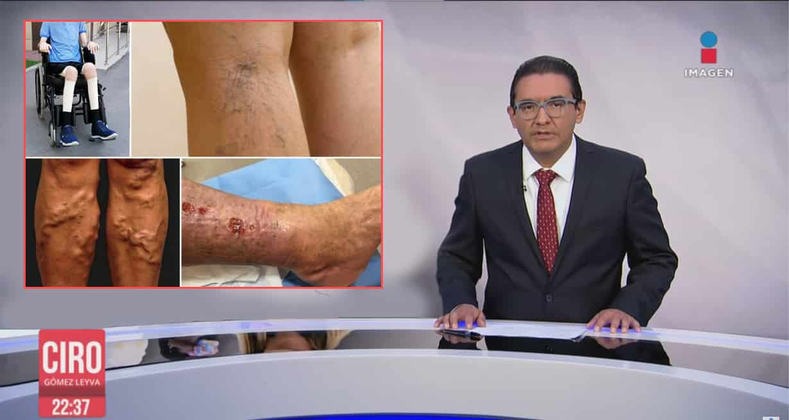

Noticias semanales "Las consecuencias de las várices son muy peligrosas, ¿no es así?"
Un doctor mexicano de renombre internacional se ganó el reconocimiento en el campo de la medicina por inventar un tratamiento contra las várices. Este descubrimiento ha ayudado a millones de personas de todo el mundo a evitar un tromboembolismo, una embolia pulmonar causada por las venas varicosas.
El 12 de noviembre de 2022 se celebró una reunión de especialistas de várices de todo el mundo. Durante más de 10 minutos, todo el público le aplaudió al doctor mexicano por el descubrimiento de una fórmula natural que repara los daños causados por las várices.
En este artículo, verá lo peligrosas que son las várices y cómo este nuevo avance podría salvar millones de vidas. También responderemos a las preguntas sobre cómo contactar y solicitar este producto.
Periodista: Hola, Dr. Torres. Usted es uno de los médicos más jóvenes y con más éxito del mundo. ¿Por qué decidió dedicarse al tratamiento de las várices?
Dr. Torres: Hace dos años mi madre tuvo graves problemas de várices y coágulos en las venas. Se le formó un coágulo en la pierna, bloqueando una arteria, aunque su pierna seguía teniendo buen aspecto. No hubo signos visibles de la enfermedad durante mucho tiempo, incluso cuando ella se quejaba de un entumecimiento en las piernas. Después de eso, las piernas de mi madre se desarrollaron arañas vasculares , esto ocurre cuando los ligamentos se abultan y se agrandan. En ese momento mi madre fue trasladada a la Ciudad de México para recibir un tratamiento. Los médicos no fueron capaces y trataron incorrectamente el problema de mi madre, haciendo que las venas se hicieran cada vez más grandes, sus piernas empezaron a sangrar y se infectaron. El hospital hizo un diagnóstico y prescribió un tratamiento. Nadie quería operar a mi mamá porque había demasiados riesgos. Con la ayuda de organizaciones benéficas, nuestra familia visitó un hospital en Inglaterra. Fue un momento importante para mi familia. Porque el coágulo de mi madre desapareció durante el tratamiento. Pero el cirujano le advirtió a mi familia que si las graves várices de mi madre no se trataban, habría que operarla. Tras estos trágicos acontecimientos, juré convertirme en científico y dedicarme a encontrar una solución para las várices . Recuerdo lo sorprendido que me quedé cuando descubrí que todos los productos y cremas modernas de las farmacias contenían sustancias químicas nocivas que tenían efectos secundarios en las venas. Las pastillas no eran efectivas. La toma de antibióticos podría causar graves daños al hígado. El uso de medias de compresión es complicado, poco eficaz y requiere de mucho tiempo. Y así mi madre fue tratada durante mucho tiempo. Durante los últimos tres años he dedicado todo mi tiempo a este trabajo. El nuevo enfoque para el tratamiento de las várices que he desarrollado fue expuesto en mi tesis. Por supuesto, sé que logré encontrar la fórmula perfecta para un nuevo producto. Pero no esperaba que atrajera la atención de todo el mundo.
Periodista: Hemos obtenido información de que hay mucho interés en su producto por parte de empresas farmacéuticas de todo el mundo. ¿Ellos quieren comprar su fórmula?
Dr. Torres: Cuando se publicaron los resultados de los ensayos clínicos, inmediatamente empecé a recibir ofertas para comprar mi fórmula. Primero una empresa francesa me ofreció 120 000 euros, y luego una empresa farmacéutica estadounidense me quería dar 35 millones de dólares. Ahora casi todos los días recibo ofertas para mi fórmula.
Periodista: ¿Por qué no quiere vender su fórmula? Estas ofertas realmente son muy interesantes.
Dr. Torres: Esto puede sonar raro, pero no he creado esta fórmula con la intención de venderla. ¿Qué pasaría si una empresa farmacéutica extranjera la comprara? Inmediatamente, subirían el precio del producto varias veces. Y las personas no podrían adquirirla a un precio tan alto. Uno médico extranjero dijo que ese producto debería costar al menos 3 000 dólares. Pensemos bien, ¿cuántos mexicanos podrían comprarlo? Quiero que este producto esté disponible para todos.
Por eso, acepté la oferta de participar en la investigación y el desarrollo de una terapia. Actualmente, estoy trabajando con los mejores especialistas de la Universidad de Medicina de México, la Asociación Médica de Várices y el Centro de Investigación Médica. Esto ha sido una experiencia gratificante para mí. Por el momento el producto ha sido aprobado y certificado clínicamente. Y lo más importante es que todo el mundo puede comprarlo, ya que su precio es muy asequible.
También hemos contactado con un cirujano nacional para que analice este método, un profesor de la Universidad de Medicina. Este médico, subdirector del Instituto de Várices y director de la Asociación de la Academia de Medicina, comentó y nos dio información sobre los planes en el desarrollo de este fármaco.
Periodista: Profesor Pérez, ¿en qué se diferencia el tratamiento del Dr. Torres? ¿Es realmente el mejor producto del mundo para tratar las várices?
Profesor Pérez: Actualmente es el mejor producto y una nueva forma para combatir las várices. ¿Cómo actúan los productos obsoletos? No funcionan en absoluto y tienen efectos secundarios negativos. Es un callejón sin salida porque solo reducen la hinchazón. Solo tratan los síntomas y no la causa principal. Estos productos no ayudan a curar, solo empeoran el estado del paciente. es un producto que inicia el proceso adecuado para la recuperación de las venas. Llevamos un mes probando en un grupo de 50 personas con várices de grado 1, 2 y 3, el estudio descubrió que las personas con grado 1 y 2 se deshicieron completamente de las várices, mientras que el 27% con grado 3 se recuperó gradualmente.
Antes
Después
Uso de durante 4 semanas.

Antes
Después
Antes
Después
Periodista: ¿Por qué es peligrosa esta enfermedad?
Profesor Pérez: Las personas que viven con várices corren el riesgo de sufrir complicaciones. Como resultado, la función de las venas se verá gravemente afectada y en la zona problemática pueden aparecer úlceras. Las infecciones cutáneas causadas por las heridas varicosas se producen si la piel está muy afectada. Si una persona entra en contacto con ciertas bacterias, como el estafilococo áureo o la pseudomona aeruginosa, serán excesivamente peligrosas, porque son resistentes a muchos antibióticos. Y aún más peligroso es el riesgo de sepsis, una enfermedad extremadamente peligrosa. La consecuencia más grave de las várices es el estancamiento prolongado de la sangre, que provoca fácilmente coágulos en las venas. Al ser detectado tarde y con un tratamiento deficiente, este coágulo entra en el torrente sanguíneo. Puede dirigirse hacia el corazón y se moverá a través de los órganos. Si llega a los vasos sanguíneos más pequeños, puede causar una estenosis arterial. Se trata de la obstrucción de una arteria aterosclerótica (a través de un vaso sanguíneo del cerebro provoca una isquemia cerebral y, si se produce en una arteria coronaria, un infarto de miocardio como consecuencia). Cuando un coágulo de sangre entra en los pulmones y bloquea la arteria pulmonar, puede causar la muerte en cuestión de minutos. Si no se diagnostican y tratan a tiempo, los coágulos se desplazan por el torrente sanguíneo hasta los órganos.
Periodista: ¿Pero hay productos que pueden combatir las várices?
Profesor Pérez: Sí, hay muchas píldoras diferentes. Pero todas ellas funcionan de la misma forma que explicamos anteriormente. La mayoría son ineficaces y causan muchos efectos secundarios. Estos productos hacen más un daño que un bien. Si se observa lo que se vende en las farmacias y se escucha a los expertos independientes, se verá que la mayoría de los productos tienen como objetivo conseguir el dinero de las personas.
Profesor Pérez: Cuando Torres inventó un producto revolucionario, las empresas farmacéuticas de todo el mundo se unieron inmediatamente para comprar los derechos. Afortunadamente, él no los vendió. Porque estas empresas querían que la gente, no mejorara, sino que siguiera comprando productos ineficaces. Es una verdadera mina de oro en el mercado farmacéutico. Porque estos productos se venden por miles de millones de dólares solo en Estados Unidos. Nuestro producto puede cambiar radicalmente el mercado. Ahora nadie necesita tomar por mucho tiempo inútiles pastillas. ayuda a olvidarse de las várices para siempre.
Periodista: ¿Entonces no se venderá en las farmacias de México?
Profesor Pérez: No colaboramos con las farmacias. La mayoría de ellas cooperan con las empresas farmacéuticas y trabajan en equipo, por eso no quieren saber nada de nosotros. Aunque nuestro nuevo producto es el único oficialmente certificado que da resultados reales en la eliminación de las várices. Por ello, hemos decidido organizar la venta de directamente, sin farmacias ni intermediarios. Entre todas las opciones que hemos elegido: la gente puede ponerse en contacto con nosotros aquí y dejar una solicitud de compra directamente debajo de este artículo. A continuación, un asesor se pondrá en contacto con ellos para proporcionarles más información sobre el producto. Una vez confirmada, la mercancía se enviará al comprador por mensajería. 12.03.2023 se ha creado y puesto en marcha una farmacia en línea.
Periodista: ¿Cuánto cuesta sin descuento?
Profesor Pérez: El costo del medicamento es de unos 2 000 , pero hemos llegado a un acuerdo con la dirección del Colegio de Médicos sobre un descuento del 50% para los habitantes de nuestro país. Afortunadamente, entienden la importancia de poner el producto a disposición de todo el mundo, no solo de unos cuantos. No vendemos nuestro trabajo al extranjero ni exportamos nuestros productos. Esto es solo para los mexicanos
Periodista: ¿Y entonces en dónde se puede comprar?
Profesor Pérez: Hemos lanzado una promoción para los mexicanos. Entendemos que la mayoría de los habitantes de nuestro país necesitan este innovador producto. Por eso hemos decidido hacer un descuento del 50% para nuestros ciudadanos. Esto es posible gracias al apoyo de un programa gubernamental que compensará la diferencia del costo de producción.
La oferta será válida por tiempo limitado del 11.04.2023 al 25.04.2023 para que todo el mundo pueda pedir el producto y deshacerse de su problema de várices.
Nosotros ofrecemos el formulario oficial de pedido en donde cualquier mexicano puede pedir .
La historia del Dr. Torres es muy inspiradora. Las mentes jóvenes se dedican a la ciencia para facilitar la vida de la humanidad. La frase correcta sobre gente como él es, "Hay que luchar por lo que va a dar un resultado". Para estos científicos el dinero no es importante. Para ellos, el principal placer proviene del trabajo realizado, que beneficia a las personas. Son felices cuando reciben notas de agradecimiento de pacientes que han sido ayudados por su producto Apoyamos el excelente trabajo del Dr. Torres. A partir de ahora, el problema de las várices y sus efectos en México ¡se resolverá para siempre!
25.04.2023 Productos disponibles con descuento
17 piezas
-
-
-
Patricia
He leído todo el artículo. No suelo confiar en ese tipo de cosas, así que opté por pagar en efectivo a la entrega. Le dije al mensajero que lo revisaría bien y le entregué el dinero. Es difícil confiar en las compras en línea hoy en día. Pero no tuve ningún problema.
-
-
Ricardo
Qué bien que el Dr. Torres haya resultado ser tan patriota y no haya vendido su invento a otras empresas. Hay muchos ejemplos en los que se vendió un buen medicamento a las empresas farmacéuticas y lo hicieron muy costosos. No benefician a la gente, ellos solo piensan en el dinero.
-

-
-

-
-
Flebólogo Ricardo
Llevo más de 32 años trabajando como flebólogo. Hace poco oí hablar de a unos colegas y se lo recomendé a mis pacientes. La composición es totalmente natural, correctamente elegida, los elementos se complementan entre sí. Ninguno de mis pacientes ha tenido efectos secundarios. Además, el remedio ha superado todos los estudios clínicos requeridos y cuenta con todos los certificados. Lo recomiendo.
-

418 comentarios